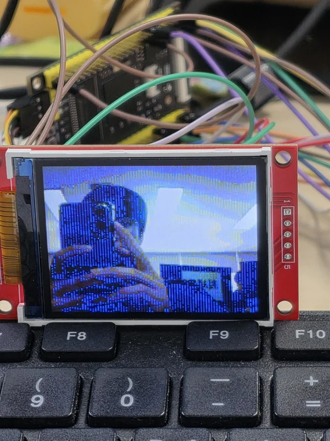
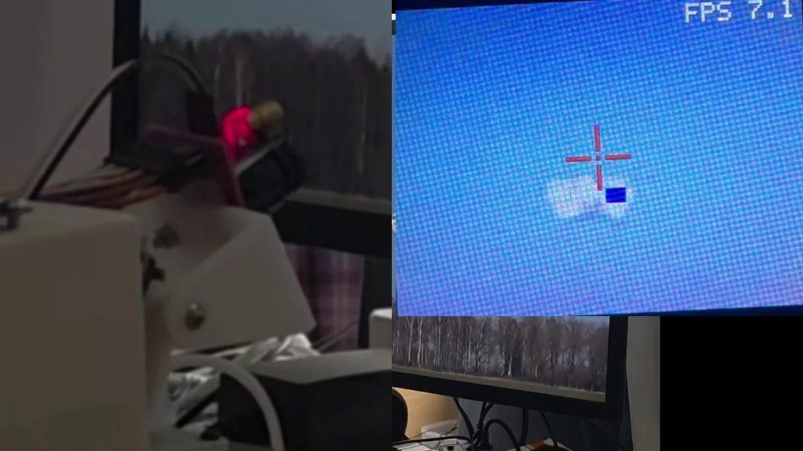

← 전체 프로젝트STM32H7 실물 · 디스플레이와 카메라 연동 로컬 시연 영상의 대표 프레임
03 / EMBEDDED AI / FREERTOS
AIMing Project
PoC 구현STM32H743에서 카메라 입력과 AI 추론, Pan/Tilt 제어를 연결한 PoC.


PROJECT OVERVIEW
어떤 시스템인가요?
단일 MCU에서 기존 FOMO 모델의 객체 검출 결과를 받아 Pan/Tilt 동작으로 연결한 실험입니다. 실제 하드웨어에서 입력부터 제어까지 이어지는 파이프라인을 확인했습니다.
MY ROLE추론 파이프라인·FreeRTOS 태스크·하드웨어 통합
MY IMPLEMENTATION
- OV2640 DCMI/DMA 프레임 수신과 AI 입력 변환
- 기존 Edge Impulse/FOMO 모델의 보드 추론 파이프라인 연동
- Vision·Motor 태스크를 Queue와 Semaphore로 연결
- 검출 좌표 기반 추적과 Joystick 수동 모드·출력 제어 통합
SYSTEM FLOW
데이터가 동작으로 이어지는 구조
- 01OV2640 / DMA
- 02Vision Task
- 03Queue
- 04Motor Task / Pan·Tilt
TEAM / EXTERNAL
모델 학습은 팀원이 담당했습니다. Edge Impulse·TensorFlow Lite, 기존 OV2640 드라이버와 서보 제어 코드를 활용해 시스템을 연결했습니다.
구현 코드 확인ENGINEERING NOTE
문제를 마주했을 때
문제와 판단
카메라 클럭을 높였을 때 화면에 파란 노이즈가 생겼습니다. 높은 입력 프레임률을 유지하기보다 기존의 안정적인 설정으로 돌아가 전체 입력·추론·구동 파이프라인을 확인했습니다.
결과와 남은 한계
영상 입력, 모델 추론, 상태 전이와 하드웨어 제어를 실제 보드에서 연결했습니다.
모니터 재촬영과 모션 블러의 영향을 받았습니다. 성능 수치는 시험 조건과 원본 로그가 충분하지 않아 공개 지표로 사용하지 않았습니다.